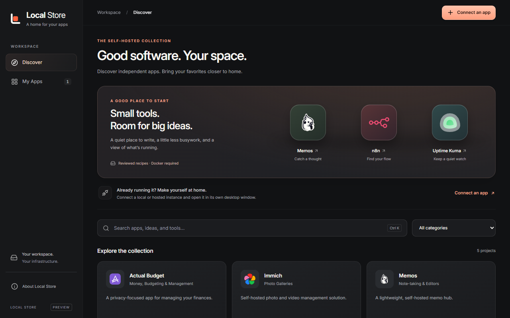

The tile is centered.
Its center sits at (32, 32) on a 64-unit canvas. On the 512-pixel app icon, the square is centered at (256, 256).
A HOME FOR YOUR APPS
Independent software, with a place on your desktop.
A quiet frame. One bright possibility.
Its center sits at (32, 32) on a 64-unit canvas. On the 512-pixel app icon, the square is centered at (256, 256).
A 4-unit gap separates the larger tile from the shelf. The L uses an 8-unit stroke with a soft, continuous corner.
The flat mark and app icon share the same proportions. Gradients add warmth to the app icon without changing its silhouette.
The tile and shelf remain separate at taskbar sizes. Keep the mark’s built-in clear space; use the filled app icon in launchers and OS surfaces.
Good software.
Your space.
Optical sizing, balanced headlines, and a measured spacing scale. Weight carries hierarchy; color makes the next action apparent.

Buttons press at 0.97 scale. Pointer-driven dialogs ease between 0.96 and 1 over 250 ms, starting from their current position if interrupted.
Search and navigation stay immediate. Keyboard actions and reduced-motion preferences skip the animation. Native dialogs manage focus and Escape.